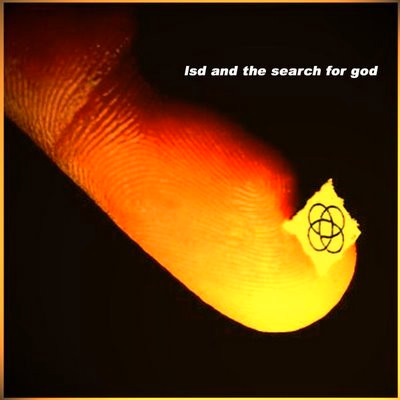
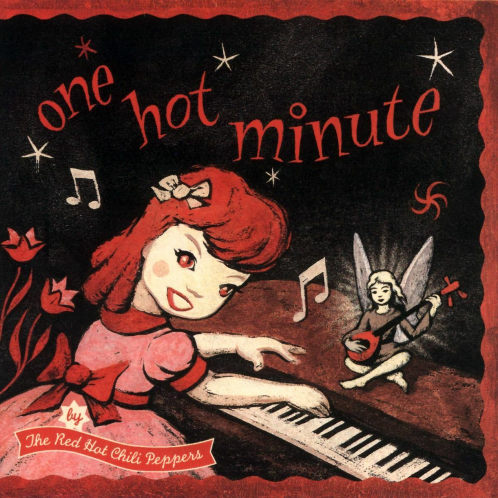

music

Lately I have been listening a lot to shoegaze music and dream pop. I mean, they are like cousins when speaking of music genres. Anyway, I’m trying not to feel too miserable, because this music is usually sadder than what I ordinarily listen to, but I really like those vibes.
I’ve been totally glued to one specific song called “Starting Over” by LSD and the Search for God. I’ve been listening to that single song on repeat without getting tired at all. The start of the song is what I really like; if I try to imagine what LSD could sound like, it would be something like that.
I’ve never tried LSD or any psychedelic, really, but if someday I did, I would probably like to listen to that song. It’s just great all around, and that particular sound at the beginning is so good. I feel like I’m on a trip, literally searching for the most hidden and greatest thing in the world or the universe but feeling free and happy.

Today I have been listening again to Aeroplane by RHCP. Every time I listen to this song, I remember things that happened to me between 2023 and 2024, and for some reason I always feel drawn to the same things that, in so many ways, have hurt me.
I guess music, for me, in a lot of instances has meant nostalgia—even for things that I know were not good, or that I have idealized for strange reasons. I really want to get out of that cycle, because I think that being mesmerized by those things is not healthy at all and could be hurting my present.
It is precisely those things that have held back my true self from being uncovered for a long time. I truly believe that I am not like some people think that I am. At the same time, I can’t ignore that my actions have sometimes made it seem that way.
In many situations, I did not make the best choices. Even if I felt overwhelmed, those were still my decisions.
I do think that rage or sadness can take you out of your senses, out of who you think you are. That’s why it becomes so easy for people to hurt each other in those states—but that doesn’t change the fact that the harm is real.
My main playlist (not sure if updated at the moment): оскорбляющий